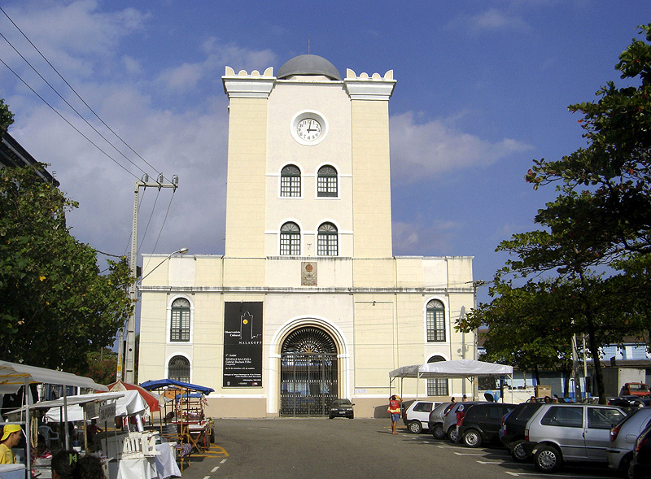

Torre Malakoff
A Torre Malakoff é uma estrutura histórica localizada no bairro do Recife Antigo. Originalmente construída como um observatório astronômico e portão do Arsenal da Marinha, hoje é um importante centro cultural que oferece exposições, eventos e uma vista privilegiada da cidade.
Paço do Frevo
O Paço do Frevo é um espaço dedicado à preservação e celebração do Frevo, um dos ritmos mais icônicos de Pernambuco. O museu oferece uma rica programação cultural, com exposições, aulas de dança e apresentações musicais, sendo um ponto de encontro para os amantes da cultura pernambucana.